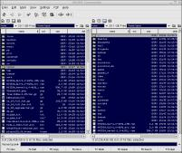
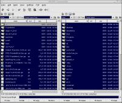

|
GNOME Commander is a nice and fast file manager for the GNOME desktop.
0.9.9 Released - Jan 19 2003
There are not so many new features
in this version. On the other hand there are lots of improvements all over
the program so the old features are now a lot mure useable than they used
to be.
Some highlights from the ChangeLog:
- Improved the advanced rename tool
- Added quick connect feature.
- Improved search dialog and fixed some bugs in it.
- Added default low-res mime icon theme.
- Made the file popup menu behave more normal.
Bad directory name in 0.9.8 release - Jul 17 2002
If you downloaded
the 0.9.8 release as source, you may have noticed that the directory name
in the tarball was wrong. That has been fixed now, but there is no need to
download again since the directory name is all that has been changed.
0.9.8 Released - Jul 16 2002
New things in this release are
autoscroll at DND, better quicksearch, mounting and unmounting, file lists
refresh without FAM, last visited directory history and more.
0.9.7 problems - Jun 7 2002
Many people seems to have had problems building the 0.9.7 release. If you are
one of thoose you should try the new tarball at SF which solves some of the
problems at least.
0.9.7 Released - Jun 6 2002
Since this is the swedish national day I decided that all the other folks out
there should have something to celebrate too. So here is a brand new release to
get excited about.
0.9.6 Released - Apr 4 2002
MIME support has been added and bugs have been fixed.
0.9.5 Released - Mar 27 2002
Added an embedded terminal and fixed some bugs.
0.9.4 Released - Mar 21 2002
Added FAM support, DnD and more.
0.9.3 Released - Mar 10 2002
A couple of more bug fixes.
0.9.2 Released - Mar 9 2002
Improved stability and less memory leaks. CVS disabled until it actually works well.
0.91-pre1 Released - Feb 6 2002
Improved userinterface and lots of other small hacks. If you're confused by the version numbers, it's all my fault.
0.90-pre1 Released - Aug 2 2001
This is the first public version of GNOME commander. Bugreports and feedback is wanted at marbj499 at student.liu.se
Overview with the default theme
 |
Overview with the Unscalable Gorilla theme
 |
| Name |
email |
uin |
| Marcus Bjurman |
marbj499 at student.liu.se |
11209076 |
| Piotr Eljasiak |
epiotr at idea.net.pl |
|
- Released source packages and rpm's can be download from the
download page at Savannah.
- The daily CVS snapshot can be obtained by gently clicking
here.
- There is also a debian package in the SID tree nowadays.
| 
{kind=link}
{kind=link}